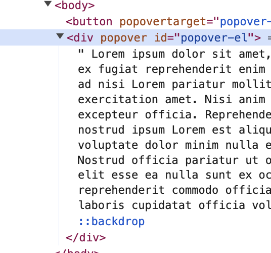

Published {% prettyDate date %}, {% readTime page %}
I want to make a simple popover web component that let's you define an anchor and attach a popover to that anchor. This element should handle some simple things, like an open attribute and clickout/focusout behavior.
This used to be super tricky, and you'd have to rely on some libraries to get this all to work together. (I used floating UI which is excellent, but we have something even better now that isn't JS!)
Just a heads up... we're going to be using some features that won't be available sometimes in chrome or firefox. It's bad that I have to preface this, but these are just too good not to make example with, and I'm certain these will have global adoption soon.
Here is the most recent availabilty status according to MDN:
The popover API gives us a nice way to make a popover. What is a popover? It's anything that floats over the page- a menu, a help tooltip- it could be anything that isn't part of the normal flow of the page.
Check out this absolutely simple example:
{% include "./example1.html" %}Pretty simple. And notice: There was no javascript (⁉️)
That's right, just using attributes you have a fully functioning popover. This version is more like a modal. If you click outside of the popover it closes the popover. If you hit escape it also closes the modal.
It actually takes the element that has the popover attribute and
puts it in a type of "portal" or slot called "top-layer":
This allows popovers to escape any issues with stacking contexts. This is a pretty advanced CSS concept, but if you're interested or running into z-index issues check out Josh Comeau's excellent post!
There are two css properties you should know about:
::backdrop and :popover-open
::backdrop Psuedo-elementThis selector has a double colon to distinguish this thing as a psuedo element you can style. If you inspect the DOM, you'll see the element and can inspect its styles:
So let's make that backdrop have a cool, foggy glass effect just to see what I'm talking about:
{% include "./example2.html" %}:popover-open CSS State
Often we want to specify styles based on whether the popover is open or not or
transitioning. So this is why we have :popover-open. To
demonstrate, here is a fade in/fade out example using that state
The reason we need to set display is that by default when a popover is closed
it's set to display: none;. In this case we're just going to
transition opacity with a teensy bit of scale to make a nice pop in/out
effect. We transition visibility to make sure that the popover is
not clickable or visible by screen readers while it's hidden.
Already, this is super cool. But there's something pretty fantastic that's recently made available in chrome...
This is fine and dandy if we want our popover to show up in the middle of the viewport like a modal. But this is not what I want. I want the popover to be anchored to the trigger button. In my case, I'm going to want to put the popover aligned to the button's left edge and just below the button so it drops down like a ... drop down.
We used to have to do this using position, creating a relative
ancestor and absolutely positioning the popover, using some fancy calculated
top and left properties. Now we have something
better!
The CSS is so quick and easy to position to the top and left of the popover against the anchor. If you're interested in seeing more examples and how this anchoring works, check out this MDN guide!
The coolest thing about all this is that we can encapsulate this popover into a web component! This makes it easy to reuse.
{% include "./example5.html" %}There we have it. We've only the platform to make a custom element that handles this popover for us (well, using Lit to help smooth out the custom element part.)
But we should support a few things: an open attribute, and
probably a focusout handling to make sure that if you're tabbing away it
closes. So first: the open attribute!
To make the open attribute available, we make it a property that
is Boolean type and reflected. That way, when the attribute is
changed, Lit takes care of placing the attribute on the custom element in the
DOM
In our case, we listen for a
toggle event. This way the open attribute will always reflect the true state
of the toggled popover.
To make the component react to that open attribute being
removed/added, we need to create a updated() check to check and
see if the open attribute has changed, and to imperatively open
or close the popover if needed.
We need to have the component respond to when focus is being applied
elsewhere. "Wait a minute, doesn't it already handle click-outs?" you might be
thinking. And this is true, but if you were to navigate past the
popover programatically, or with a keyboard using tab, it would remain open.
So let's just have the component react to the
focusout event
This focusout event has a relatedTarget property that tells us
what is receiving the new focus. We can just check to see if that element is
inside the DOM of the custom element, and if not we can close the popover. And
vice versa!
Check out an example where we haven't yet done this foucusout handling. Try navigating with the keyboard, hitting enter on other buttons, and see if the popover closes
{% include "./example7.html" %}Alright, so here is an example with that being handled:
{% include "./example8.html" %}If you are keen-eyed, you might have noticed that there's a split second where the popover we made is "popping" in. The DOM shows slot content while the web component is still being register, then it applies the constructed styles and popover hide/showing a second later. We'd rather not have the slot content appear at all until the web component is loaded!
This Flash Of Unstyled Content is easy to avoid:
{% include "./example9.html" %}
Note that this is defined in the overall page styles, not the
my-popover constructed stylesheet. This tells the page how to
deal with our popover slot contents until it is :defined. Check
out the :defined psuedo-selector docs page for
more uses. But this is so cool to me that the platform has solutions for those
edge issues.
I think this example is powerful because it shows just how far the platform has come.
The popover takes care of creating a portal of sorts to place content in a popover in the root of the document. This popover also handles clickout behavior, open/closed state, and creating the opening/closing behavior. It comes with a sneezeguard built in!
The anchor positioning allows us to avoid using a JS library and with three lines of code position the popover declaratively where we want it. We didn't even get into the robust options the anchor positioning css allows for us!
The web component allows us to create a dead simple re-usable element. We
could modify this to be a tooltip, a drop down menu, or a hover contextual
helper, and lots more. We use platform events to handle the two-way binding of
the open attribute and to handle focusout events.
I ❤️ the platform!
{% socials %}
➡️ Thomas Broyer
pointed out on mastodon that we don't need to use
connectedCallback() and disconnectedCallback() to
attach and remove the focus event listener. It suffices to just attach the
focus listener in the constructor, since the listener is on the element and if
the element is removed so will the listener. The last example was updated to
show that! Thanks, Thomas Broyer!
➡️ westbrook pointed out two things:
@oldcoyote Looking good!
...except, the <baseline-status> adjusts for `prefers-color-scheme: dark` while your site doesn't leaving some users with the attached screen shot 😱
Also, have thought about distribution of :not(:defined) styles to prevent a little FOUC in your <my-popover> element, something like:
Depends on usage whether it's worth having, especially without a standard distribution mechanism.
Very true and very true. I've adjusted my site styles to handle the
prefers-color-scheme: dark. I added a short note about the FOUC
style at the end of the post, too. Thanks, westbrook!